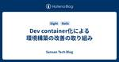
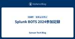
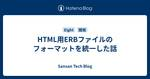

Sansan Tech Blog
https://buildersbox.corp-sansan.com/
Sansanのものづくりを支えるメンバーの技術やデザイン、プロダクトマネジメントの情報を発信
フィード
2024年 研究開発部 新卒開発研修 後編 1
1
Sansan Tech Blog
こんにちは、研究開発部Architectグループの山本です。 前編に引き続き、新卒社員に対して行った研修を紹介したいと思います。 後編では、前編で開発したサービスを社内アプリケーション基盤にデプロイする内容となります。 前編はこちら buildersbox.corp-sansan.com
13時間前

Dev container化による環境構築の改善の取り組み
Sansan Tech Blog
外に出るとくたばってしまうほどの暑さで、ネックファンと日傘がないと生きていけない日が続いていますが、皆さんはどうお過ごしでしょうか？どうも技術本部Eight Engineering Unit Product Devグループの平石です。 今回はEightの開発環境構築の体験改善のために行ったDev container化についてお話しします。
5日前

Splunk BOTS 2024参加記録
Sansan Tech Blog
こんにちは！技術本部情報セキュリティ部 CSIRTグループ所属の松尾です。 去年の12月からセキュリティエンジニアとしてSansanで働いています。 前職では主に情報システム部として社内でのIT戦略やシステム企画から運用・保守、サポート諸々に幅広く携わっておりました。 ITインフラに向き合っていく中でセキュリティの面白さに惹かれて今に至ります。 現在は問い合わせ対応、アラート監視、インシデント対応のようなSOCチームとしての業務をしつつ、企画～運用や内部システム監査など社内のセキュリティと利便性を向上させるための施策に広く携わっております。 今回は7/11（木）にSplunk社主催のCTFであ…
8日前
リソースのクリーンアップをうっかり忘れたらAzure Service Bus接続上限に当たった話 1
Sansan Tech Blog
技術本部 Sansan Engineering Unit Data Hubグループの茂木（@shinnopo_）です。普段はSansanのデータ統合プラットフォームであるSansan Data Hubの開発をしています。 今回は、リソースのクリーンアップをし忘れたことでAzure Service Busの同時接続数の上限に達してしまった問題と、その解決方法について紹介します。
11日前

HTML用ERBファイルのフォーマットを統一した話 21
Sansan Tech Blog
こんにちは。 名刺アプリ「Eight」でエンジニアをしている鳥山（@pvcresin）です。 最近、ミスタードーナツのミニオンコラボの商品を食べたのですが、 どれも美味しくて見た目もかわいいので最高でした。 特にポン・デ・リングベースのものは、表面のキャンディが口の中でパチパチと弾けて楽しいのでオススメです。 さて今回は、RailsのViewで使う、HTML用ERBファイルのフォーマットを統一した話をします。
12日前

Kubernetes上に負荷試験基盤を構築した話
Sansan Tech Blog
こんにちは、研究開発部Architectグループ ML Platformチームの藤岡です。今回はKubernetes上に負荷試験基盤を構築したので、その取り組みについて紹介しようと思います。 目次 目次 背景 負荷試験基盤の要件 負荷試験ツールの選定 負荷試験基盤のシステム概要 シナリオファイルの管理方法 Kubernetes operator pattern の利用 GitHub Actionsの共通化 Slack通知用のAPIを用意 負荷試験の導入 負荷試験シナリオの詳細 負荷試験の実行 負荷試験の結果 おわりに
15日前
2024年 研究開発部 新卒開発研修 前編
Sansan Tech Blog
こんにちは、研究開発部Architectグループの山本です。 昨年に引き続き、研究開発部の新卒社員向けに開発研修を行いました。 今年の研修では、私自身が昨年受けた経験をもとに感じた改善点や部内での技術的なアップデートを踏まえて実施しました。 昨年の記事を読んでいない方でも分かりやすい構成にしたので、ぜひご一読ください。 昨年の記事はこちら。 buildersbox.corp-sansan.com 本記事は前編と後編に分かれています。 主に前編ではローカル環境でPythonでサービスを開発するパートを紹介し、後編ではサービスをデプロイするパートを解説します。
16日前
EightのJetpack Composeで使われているマルチプレビューをご紹介します
Sansan Tech Blog
技術本部Mobile Application Groupの荒です。AndroidアプリエンジニアとしてEightのAndroidアプリ開発に携わっています。 Eight AndroidではUI実装にJetpack Composeを使用しています。 その中で、共通で適用したいPreviewをまとめてカスタムマルチプレビューアノテーションとして定義し、プロジェクト内で定義されるComposableは基本的にこのPreviewで表示を確認するよう運用しています。 今回はそのEightで使用しているプレビューの内容を紹介するとともに、カスタムマルチプレビューアノテーションを使用することとした背景なども…
17日前
名寄せの定量評価とGroup Sequential Test
Sansan Tech Blog
こんにちは、技術本部Sansan Engineering UnitのNayoseグループでバックエンドエンジニアをしている上田です。普段はデータの名寄せサービスを開発しています。Sansanの名寄せというのは、こちらのページに記載のとおり、別々のデータとして存在する同じ会社や人物のデータをひとまとめにグルーピングすることを言います。下記の記事のとおり、前回は名寄せアルゴリズムを定量評価する際に利用する統計的仮説検定において、固定サンプルサイズ検定の課題を解決する逐次検定の手法SPRT（Sequential Probability Ratio Test、逐次確率比検定）を紹介しました。SPRTに…
17日前
インボイス管理サービス「Bill One」の認証を内製認証基盤に置き換えて認証基盤のコストを削減した話
Sansan Tech Blog
Bill One Engineering Unit 共通認証基盤チームの樋口です。 Bill Oneでは昨年までAuth0を認証基盤として利用してきましたが、認証基盤を内製化することでコストを大幅に削減しました。 この認証基盤は、昨年12月に無事リリースされ、Bill Oneの認証を支えています。 今回は認証基盤の内製化に至った経緯と設計、移行プロセスについて紹介します。
19日前
Sansan Mobile iOS/Androidエンジニア全13名でKotlin Multiplatform導入に向けた開発演習を実施しました
Sansan Tech Blog
技術本部Mobile Application Groupの赤城です。最近は、Sansan Mobileアプリの開発チームのエンジニアマネジャーとして活動しています。 この度、Sansanのモバイルアプリ開発を加速させるためKotlin Multiplatformの導入を決定しました！ それに際して、普段KotlinになじみのないiOSエンジニアも全員KMPでコードが書けるよう、キャッチアップ期間を設けました。 そして、今年5月にその集大成としてKotlin Multiplatform（以下、KMP）開発演習を実施しました。 今回はその開発演習の準備から、当日の様子に至るまでをお話します。
22日前
Azureを使ったテスト環境の構築
Sansan Tech Blog
技術本部 Quality Assurance でQA戦略を担当している三好です。 マイクロソフトさまのご協力をいただいて、Azure Dev Test LabにBastionを組み合わせ、Dev Test LabによるVMの管理の容易さとBastionによるセキュリティの向上を備えたQAの手動・自動テスト環境を構築しました。 Bill One / Data Hub / Contract OneでのQA評価に利用を始めています。
24日前
KotlinとSwiftを一つのIDEで開発する：JetBrains Fleetの紹介
Sansan Tech Blog
こんにちは、技術本部Mobile ApplicationグループでiOSアプリケーション開発しています。武田です。Mobile Applicationグループではシン・技術研鑽DAYと題して、社内勉強会を開催しています。今回の記事では、その勉強会で発表した資料をベースに説明します。Mobile ApplicationグループではKMPを採用した機能開発を行っています。 現状のiOSアプリでは、XcodeとAndroid Studioの行き来が頻繁に発生します。 SwiftもKotlinも1つのIDEで開発したい。そんなあなた私に朗報です。 Fleetというツールがあります！ パブリックプレビュ…
1ヶ月前
エンジニア集団の中のマイナー組織!? プロダクト競争力であるデータ化をリードする4つのOperation組織とは
Sansan Tech Blog
はじめに プロダクトの競争力である「データ化」 エンジニア集団の中のマイナー組織、4つの「Operations Group」 Operations Group Scan Operations Group Global Operations Group Operations Platform Group データ化オペレーションスペシャリスト「Operations Group」 Operationsの世界へ！ はじめに Digitization部 Operations Groupの三原です。 今回は、エンジニア組織であるSansan技術本部の中で、非エンジニア（ビジネス職）メンバーによって構成され…
1ヶ月前
社内交流のために大規模OSTをやりました（3回目）
Sansan Tech Blog
技術本部 Sansan Engineering Unit Data Hub グループの光川です。先日、技術本部総会という、技術本部に所属するメンバーが一堂に集まるイベントの3回目が開催されました。その中のコンテンツとしてOST（オープンスペーステクノロジー）を実施しました。前回、前々回に引き続きOSTの運営に携わったので、レポートを書きます。 過去に実施した、OSTの記事はこちらです。 buildersbox.corp-sansan.combuildersbox.corp-sansan.com
1ヶ月前
blue/green戦略によるKubernetesクラスタ更新時にIstioの対応方法
Sansan Tech Blog
研究開発部 Architectグループ ML Platformチームのジャン(a.k.a jc)です。 前回弊チームのKAZYがKubernetesクラスタ更新時のマニフェスト差分をGitのブランチで吸収する方法を紹介しました。 buildersbox.corp-sansan.com 今回は解像度をあげてKubernetesクラスタ更新時のIstioの対応方法について紹介します。
1ヶ月前
Vol.06 名刺メーカー1Day合宿レポート~TerraformのTipsを添えて~
Sansan Tech Blog
こんにちは。Strategic Products Engineering Unit SREグループの辻田です。2年半ほどお世話になった研究開発部Architectグループを卒業して、今年6月にSREグループへ異動してきました。 先日、名刺メーカーの開発チームメンバーとオフラインで集まり、ワークショップとモブプロ大会を行いました。 なお、本記事は【Strategic Products Engineering Unitブログリレー】という連載記事のひとつです。
1ヶ月前
Vol.05 StorybookとChromaticでフロントエンド開発の開発効率と品質を上げる
Sansan Tech Blog
電動キックボードが気になってはや1年、こうなるともう一生乗ることはない気がしている今日この頃ですが、皆さんはいかがお過ごしでしょうか。 どうも、技術本部Strategic Products Engineering Unit Contract One Devグループの原です。 Contract Oneに入ってからだいたい2年になりますが、今はテクニカルリードとして技術的負債の解消や生産性の向上についての活動をしながら、時たま大きめの機能開発のプロジェクトリーダーなんかもやったりしています。 今回はそんな僕の活動の中から、生産性の向上に関する取り組みを1つご紹介します。フロントエンド側の開発に焦点…
1ヶ月前
雑談が苦手だけど1on1をやった話
Sansan Tech Blog
技術本部Mobile Application Group Eight Androidチームの山本です。今回は雑談が苦手な自分がどう1on1を行ったかという話をします。 自分は雑談が苦手です。目的があって話すことは問題ないのですが、雑談自体が目的化している場が苦手です。 自分がチームリーダーになった後も、メンバーとの1on1はマネジャーにお願いしていました。しかしマネジャーが育休を取得することになり、その期間中は自分が1on1を担当することになりました。この時、自分が採ったやり方について紹介します。 1on1はいろいろなやり方があり、自分の採った方法は推奨されないやり方とされている場合もあります…
1ヶ月前
【Sansan Tech Talk】モバイル開発の技術的挑戦 〜KMP導入で目指す開発生産性の向上〜
Sansan Tech Blog
こんにちは、Sansan Engineering Unitの部長を務める、笹川 裕人です。今回で5回目となる「Sansan Tech Talk」。この企画はSansanのテックリードたちが直面している技術的な課題や取り組みについて深掘りする連載企画です。 今回はMobile ApplicationグループのAndroidエンジニアである北村 研二にインタビューしました。▼連載記事はこちら buildersbox.corp-sansan.com
2ヶ月前
Vol.04 LLMOps に取り組み始めた話
Sansan Tech Blog
技術本部Strategic Products Engineering Unit Contract One Devグループの伊藤です。契約データベース「Contract One」の開発に携わっています。 Contract Oneでは、GPTを活用した機能をいくつか提供しています。 今回は、Contract OneのGPTを活用した機能開発のために、LLMOpsの取り組みの一環としてLangfuseを導入し始めた話をします。なお、本記事は【Strategic Products Engineering Unitブログリレー】という連載記事のひとつです。 buildersbox.corp-sansan…
2ヶ月前
エンジニア運用工数40%削減！Bill One における運用改善のとりくみ
Sansan Tech Blog
Bill One Engineering Unitの田上です。運用改善と題したプロジェクトによって、エンジニアの運用工数を半年で40%削減することに成功したので、今回はその取り組みをご紹介します。
2ヶ月前
ComposableのonClickはラムダ式？Listener？
Sansan Tech Blog
こんにちは！Sansan技術本部Mobile Applicationグループのふるしんです。以前の記事で「アーキテクチャ検討会」を実施しているお話を書きました。 buildersbox.corp-sansan.comこの検討会の中ではどのような議論がなされているのかを聞かれる機会があり、せっかくなのでご紹介します。
2ヶ月前
失敗からの学び：Node.JSのStreamにおけるアウトオブメモリとRxJS, IxJS
Sansan Tech Blog
はじめに データ戦略部門の松本です。 1年の各月の季節を漢字で表すと「冬冬春春夏夏夏夏夏夏秋冬」と感じるくらい最近暑いですね。5月なのに真夏日も出ており、秋が好きな私としてはとても残念な気持ちを持っています。今年も暑くなりそうなので、体調に気をつけて過ごしていきたいです。 今回はRxJSやstream処理について失敗から学びを得ましたので、その知見を共有します。
2ヶ月前
【Sansan Tech Talk】 Sansan Data Hubの技術的挑戦 〜データ連携パイプラインを支えるエンジニアリング〜
Sansan Tech Blog
こんにちは、Sansan Engineering Unitの部長を務める、笹川 裕人です。今回で4回目となる「Sansan Tech Talk」はSansanのテックリードたちが直面している技術的な課題や取り組みについて深掘りする連載企画です。今回は営業DXサービス「Sansan」の「データ連携ソリューション」オプションの一機能であるSansan Data Hubの開発に携わっている藤原 雄介にインタビューしました。▼連載記事はこちら buildersbox.corp-sansan.com
2ヶ月前
Apexで他のユーザの項目レベルセキュリティを見るには
Sansan Tech Blog
はじめに お久しぶりです。技術本部 Sansan Engineering Unit Data Hubグループの菊池です。 皆さんSalesforce開発を楽しんでいますか？ 私はSalesforce開発に携わり9年経ちますが、まだまだ知らないことが多く日々勉強であると痛感しています。 その中で今回は技術調査で得たナレッジを共有します。
2ヶ月前
Vol.03 Kover CLIでKotlinのTest Coverage Reportをあとからマージする
Sansan Tech Blog
こんにちは。2024年4月に新卒として入社しました、技術本部Strategic Products Engineering Unit Contract One Devグループの髙野です。 2023年3月に内定者インターンを開始して以来、契約データベース「Contract One」を開発しています。 本記事では、自動テストの改善活動の一環として、Gradleのマルチプロジェクト構成でTest Coverage Reportを生成するために調査したことについてまとめます。 なお、本記事は【Strategic Products Engineering Unitブログリレー】という連載企画の記事です。 …
2ヶ月前
2024年度人工知能学会に参加しました
Sansan Tech Blog
こんにちは！研究開発部の山内敏嗣です！浜松で行われた2024年度 人工知能学会全国大会 （第38回）において、企業ブースの出展、ポスター発表を行いました。 本ブログでは、その様子について紹介します。
2ヶ月前
EightのエンジニアでRubyKaigi 2024に参加してきました！
Sansan Tech Blog
はいさい！名刺アプリ「Eight」でエンジニアをしている鳥山（@pvcresin）です。 沖縄で行われたRubyKaigi 2024に、Eightのエンジニアメンバーで参加してきました！ Eightロゴのポーズをする参加メンバー 今回は、それぞれの視点からRubyKaigiの感想や印象に残ったセッションについてまとめた記事をお送りします。
2ヶ月前
ベイジアン操作変数法でA/Bテストをしよう
Sansan Tech Blog
こんにちは。4月に24新卒として入社しました、技術本部 研究開発部の金髙です。大学院では政治学の研究をしていました。 本記事では、筆者が2024年2月から約1カ月間の内定者インターン時代に取り組んだ内容の一部である「ベイジアン操作変数法を用いたA/Bテスト」について紹介します。
2ヶ月前